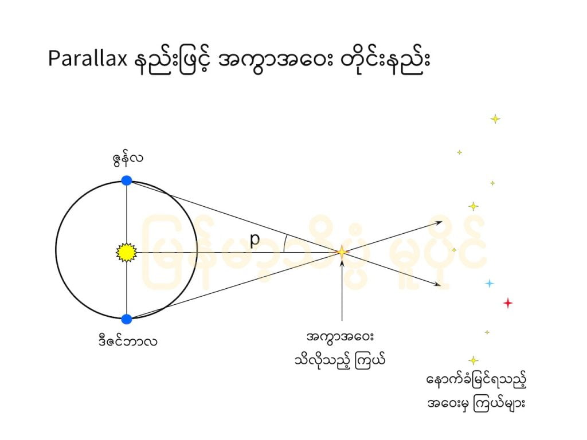
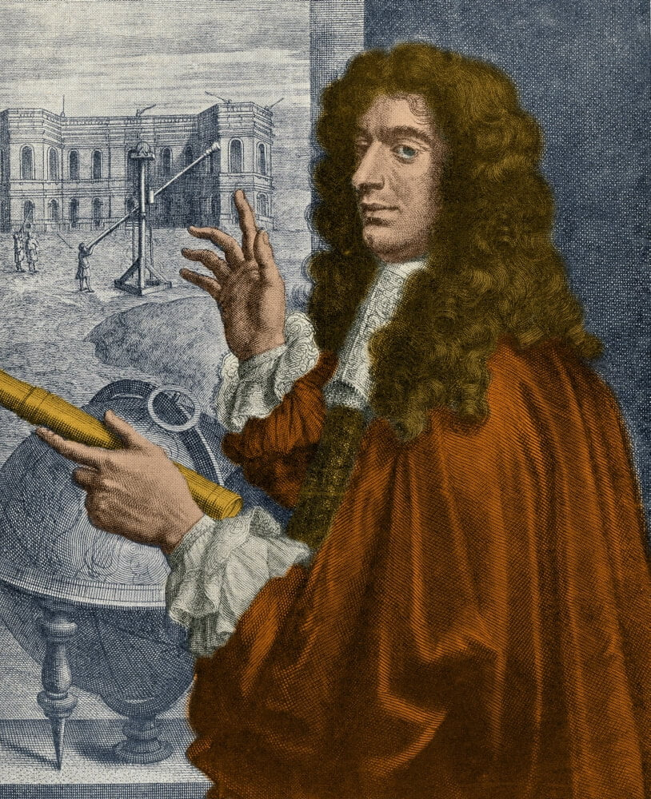

ဂလက်ဆီ တွေဆိုရင် အလင်းနှစ်က သန်းချီ ဝေးတာပါ။ အနီးဆုံး ဆိုတဲ့ အင်ဒရီုမီဒါ (Andromeda Galaxy) ဂလက်ဆီတောင် အလင်းနှစ် ၂.၆ သန်း ဝေးပါတယ်။ အခြား ဂလက်ဆီတွေဆို အလင်းနှစ် သန်းရာချီ ဝေးတဲ့ ဂလက်ဆီတွေတောင် ရှိပါတယ်။ ဒီ ကြယ်တွေ ဂြိုလ်တွေရဲ့ အကွာအဝေးကို တိုင်းဖို့ အတွက် သိပ္ပံ ပညာရှင် တွေက နည်းအမျိုးမျိုးကို အသုံးပြုကြပါတယ်။
- သိပ်မဝေးတဲ့ အနီးအနားက ကြယ်တွေကိုတော့ Stellar Parallax နည်းနဲ့ တိုင်းပါတယ်။
- နဲနဲ လှမ်းတဲ့ နေရာက ကြယ်တွေ၊ ဂလက်ဆီတွေ ကိုတော့ ကြယ်ရဲ့ အလင်းအားနဲ့ တိုင်းပါတယ်။
Stellar Parallax ဖြင့်တိုင်းသောနည်း
အာကာသထဲက မြင်ရတဲ့ ကြယ်တွေရဲ့ အကွာအဝေးကို သိပ္ပံ ပညာရှင်တွေ တိုင်းတဲ့ အခါမှာ Stellar Parallax လို့ခေါ်တဲ့ နည်းကို အသုံးပြုပြီး တိုင်းပါတယ်။ တကယ်တော့ ဒီနည်းက သီအိုရီ အရဆိုရင် ဘာမှ မခက်ပါဘူး။ ၁၀ တန်းကျောင်းသား တစ်ယောက် သင်ရတဲ့ သင်္ချာကို အသုံးပြုပြီး တွက်တာပါ။ ပြောရရင် ၁၀ တန်းလောက်တုန်းက သင်ခဲ့ရတဲ့ တြိဂံရဲ့ အနားတွေကို Sine တို့ Cosine တို့နဲ့ တွက်တဲ့နည်းကို အသုံးပြုပြီး တွက်တာပါ။ဒီတွက်နည်းကို မရှင်းပြခင် အရင်ဆုံး အရေးကြီးတဲ့ သဘောတရား တခုကို ရှင်းပြချင်ပါတယ်။ အဲ့တာကတော့ Parallax ဆိုတဲ့ သဘောတရားပဲ ဖြစ်ပါတယ်။
အရင်ဆုံး လက်တွေ့ စမ်းသပ်မှုလေး တခု လုပ်လိုက် ကြရအောင်ပါ။ ဒီစာ ဖတ်နေရင်းနဲ့လဲ လိုက်လုပ်နိုင်ပါတယ်။ ဘာပစ္စည်း ကိရိယာမှ မလိုပါဘူး။
မျက်နှာရှေ့မှာ ညာဖက်လက်ကို ရှေ့တည့်တည့်ကို ဆန့်ထားပါ။ ပြီးရင် လက်မလေးကိုပါ ထောင်လိုက်ပါ။ ဘယ်ဖက် မျက်လုံးကို ပိတ်ပြီး လက်မကို ကြည့်ပါ။ လက်မနောက်က နောက်ခံကိုလဲ မှတ်ထားပေးပါ။ ပြီးရင် ဘယ်ဖက်မျက်လုံး ဖွင့်ပြီး ညာဖက်မျက်လုံး ပိတ်ပြီး ပြန်ကြည့်ကြည့်ပါ။ ဒီတခါလဲ သူ့နောက်ခံကို သေချာ ကြည့်ကြည့်ပါ။ ဘယ်ဖက် မျက်လုံးက မြင်တဲ့ အမြင်နဲ့ ညာဖက် မျက်လုံးက မြင်တဲ့ အမြင် တူကြ သလားဗျာ။
ဟုတ်ကဲ့ပါ။ ခုနက လက်တွေ့ စမ်းသပ်မှု မှာ တွေ့ကြတဲ့ အတိုင်းပဲ ဘယ်ဖက်က မြင်ရတာနဲ့ ညာဖက်က မြင်ရတာ မတူပါဘူး။ ကွဲပါတယ်။ ဒီလို ကြည့်တဲ့ နေရာ ကွာခြားချက်ပေါ် မူတည်ပြီး မြင်ရတဲ့ ပုံရိပ် ပြောင်းလဲမှုကို Parallax လို့ ခေါ်ပါတယ်။ တနည်း ပြောရရင် အနီးမှာ ရှိနေတဲ့ အရာဝတ္ထုတွေကို မြင်ရတဲ့ နောက်ခံမြင်ကွင်း ပြောင်းလဲ သွားတာကို parallax လို့ ခေါ်တာပါ။
ကောင်းပါပြီ။ ဒီ Parallax က ကြယ်တွေရဲ့ အကွာအဝေးကို တိုင်းတဲ့ နေရာမှာ ဘာဆိုင်လို့လဲ လို့ မေးစရာ ရှိပါတယ်။
ဟုတ်ကဲ့ ဆိုင်ပါတယ် ခင်ဗျာ။ အရမ်းကို ဆိုင်ပါတယ်။ ဒီ Parallax ရဲ့ သဘောတရားကို အသုံးပြုပြီး ကြယ်တွေရဲ့ အကွာအဝေးကို တိုင်းတာ မို့ပါ။
ကမ္ဘာဟာ နေကို ပတ်နေပါတယ်။ ကမ္ဘာက နေထိ အကွာအဝေးဟာ မိုင် သန်း ပေါင်း ၉၃ သန်းလောက် ရှိပါတယ်။ ကမ္ဘာက နေကို ပတ်နေတဲ့ အတွက် ကြယ်တခုကို ကမ္ဘာကနေ မြင်ရတဲ့ ထောင့်သည် နေရဲ့ တဖက်ခြမ်းမှာ ရှိနေတဲ့ အချိန်နဲ့ အခြားတဖက်ခြမ်းကို ရောက်သွားတဲ့ အချိန်ကြား အနည်းငယ် ကွာခြားပါတယ်။ ကျွန်တော်တို့ ဘယ်မျက်လုံးနဲ့ ညာမျက်လုံး မြင်ရတာခြင်း နည်းနည်း ကွာသလိုပဲပေါ့။
ဒီလို ကွာခြားတဲ့ ထောင့်လေးက သေးလွန်းတာမို့ သာမန် တယ်လီ စကုပ်တွေနဲ့ အတိအကျ တိုင်းတာဖို့ မလွယ်ကူပါဘူး။ အရမ်း အားကောင်းတဲ့ တယ်လီစကုပ် ကြီးတွေနဲ့ တိုင်းဖို့ လိုအပ်ပါတယ်။
ဒီတိုင်းတာပုံကို အောက်က ပုံမှာ တွေ့မြင်နိင်ပါတယ်။ ကမ္ဘာက နေရဲ့ တဖက် ရောက်တဲ့ အချိန်မှာ မြင်ရတဲ့ ကြယ်ရဲ့ အနေအထားနဲ့ နောက်တဖက်ရောက်တဲ့ အချိန်မှာ မြင်ရတဲ့ ကြယ်ရဲ့ အနေအထား ကွာခြားမှုကို တိုင်းတာပြီး ထောင့် p ကို တိုင်းယူပါတယ်။ ကမ္ဘာနဲ့ နေရဲ့ အကွာအဝေးက မိုင် ၉၃ သန်းခန့် ရှိပါတယ် (တကယ်တွက်တော့ အတိအကျ အကွာအဝေးကို ယူပြီး တွက်တာပါ)။ ဒီအကွာအဝေးနဲ့ ထောင့်နဲ့ ရပြီဆိုရင် ကမ္ဘာနဲ့ ကြယ် အကွာအဝေး ကို ဖြစ်စေ၊ ကမ္ဘာနဲ့နေ အကွာအဝေးကို ဖြစ်စေ တွက်ယူလို့ ရပါပြီ ခင်ဗျာ။

tan p = 1AU/d
ဒီ ဖေါ်မြူလာ လေးကို နည်းနည်း ရှင်းပြပါမယ်။
ကျွန်တော်တို့ ၁၀ တန်းတုန်းက တြိဂံရဲ့ အနားတွေ တိုင်းတဲ့ နေရာမှာ sine, cos, tan စတဲ့ အနားအချိုးတွေ မှတ်မိ အုံးမှာပါ။ မမှတ်မိရင်လဲ ပြန်ပြောပြပါမယ်။ ဒီနေရာမှာ tan ဆိုတာက ထောင့်မှန် တြိဂံ တစ်ခုရဲ့ ထောင်လိုက် ရှိတဲ့ အနားကို အောက်ခြေက အနားနဲ့ စားလို့ရှိရင် ရတဲ့ အချိုး ဖြစ်ပါတယ်။ အပေါ်က ပုံမှာ ထောင်လိုက် ရှိတဲ့ အနားက နေနဲ့ ကမ္ဘာကြားက အကွာအဝေး ဖြစ်ပါတယ်။ ဒီအကွာအဝေးကို 1 AU (astronomical unit) အနေနဲ့ နက္ခတ် ပညာရှင်တွေက သတ်မှတ်ကြပါတယ်။
အောက်ခြေမှာ ရှိတဲ့ အနားကတော့ နေနဲ့ ကြယ် အကြားက အကွာအဝေး ဖြစ်ပါတယ်။ ပုံမှာ d နဲ့ ပြထားတာပါ။
p ကတော့ နေရယ်၊ ကြယ်ရယ်၊ ကမ္ဘာရယ် ကြားက ဖြစ်လာတဲ့ ထောင့် ဖြစ်ပါတယ်။
ဒီ ဖေါ်မြူလာကို ဟိုဖက် ဒီဖက် ပြန်ပြီး ရွှေ့လိုက်ရင် အောက်က ဖေါ်မြူလာ ရလာပါတယ်။
d = 1AU/tan p
ဒါဆို လော့ဂရစ်သမ် စာအုပ်လှန်ပြီးတော့ ဖြစ်စေ၊ scientific calculator မှာ နှိပ်ပြီး ဖြစ်စေ အကွာအဝေးကို ရှာလို့ ရပါပြီ။ ရှာတဲ့ နမူနာကို နောက်ပိုင်းမှာ ပေးထားပါတယ်။
ရှေးခေတ်ကတိုင်းခဲ့ပုံ
ဒီ Parallax နည်းကို အသုံးပြုပြီး ပထမဆုံး တိုင်းခဲ့တဲ့ သမိုင်းမှတ်တမ်းကတော့ ခရစ် မပေါ်မီ BC 189 ခုနှစ်မှာ ဂရိ နက္ခတ် ပညာရှင် ဟစ်ပါးခတ်စ် (Hipparchus) ပဲ ဖြစ်ပါတယ်။ သူတိုင်းခဲ့တာကတော့ ကြယ်ရဲ့ အကွာအဝေးကို မဟုတ်ပါဘူး။ နေကြတ်တဲ့ ဖြစ်စဉ်ကို ကမ္ဘာ့ နှစ်နေရာကနေ လေ့လာပြီး ရလာတဲ့ ထောင့်ကနေ ကမ္ဘာနဲ့ လရဲ့ အကွာအဝေးကို တွက်ချက်ခဲ့တာ ဖြစ်ပါတယ်။အဲ့သည်နှစ် မတ်လ ၁၄ ရက်နေ့က နေကြတ်ပါတယ်။ နေကြတ်တာကို တူရကီ နိုင်ငံ ဟီလီးစ်ပွန့် ကနေဆို အပြည့် မြင်ရပါတယ်။ သူ့ တောင်ဖက် မိုင် ၆၀၀ ခန့် အကွာမှာ ရှိတဲ့ အီဂျစ်နိုင်ငံ အလက်ဇန်းဒရီးယား မြို့မှာတော့ နေကြတ်တာကို အပြည့် မမြင်ပဲ လက နေရဲ့ ၅ ပုံ ၄ ပုံ (၄/၅) ကိုပဲ ကာနေတာ တွေ့ရပါတယ်။ ဆိုလိုတာ မြို့နှစ်မြို့ အကြားမှာ လက နေရဲ့ ၁/၅ လောက် အမြင် ကွာသွားတာ ဖြစ်ပါတယ်။ ဒီ ကွာခြားချက်ဟာ ထောင့်နဲ့ ဆိုရင် ၁ ဒီဂရီရဲ့ ၁/၁၀ ပုံ ရှိပါတယ် (၀.၁ ဒီဂရီပါ)။ ဒီ အချက်တွေကနေ တွက်ကြည့်လိုက်တော့ လနဲ့ ကမ္ဘာရဲ့ အကွာအဝေးဟာ မိုင်ပေါင်း ၃၅၀,၀၀၀ ခန့် ရှိမယ်လို့ အဖြေရပါတယ်။ ဒါက တကယ်ရှိတဲ့ အကွာအဝေးထက်တော့ ၅၀% လောက် ပိုများနေပါတယ် (တကယ်က ၂၃၈,၈၅၅ မိုင်ဝေးတာပါ)။ သူအဓိက မှားတဲ့ အချက်ကတော့ လက နေကြတ်ချိန်မှာ ခေါင်းပေါ်တည့်တည့် ရောက်နေတယ်လို့ ယူဆပြီး တွက်ခဲ့လို့ပဲ ဖြစ်ပါတယ်။
၁၆၇၂ ခုနှစ်မှာတော့ အီတလီ နက္ခတ် ပညာရှင် ဂျီယိုဗန်နီ ကတ်စီနီ (Giovanni Cassini) နဲ့ သူ့မိတ်ဆွေ ဂျင်းရစ်ချာ (Jean Richer) တို့ဟာ အင်္ဂါဂြိုလ်ကို ပြိုင်တူ တိုင်းခဲ့ ကြပါတယ်။ ကတ်ဆီနီက ပြင်သစ်နိုင်ငံ ပဲရစ်မြို့ကနေ တိုင်းတာ ဖြစ်ပြီး ရစ်ချာကတော့ ပြင်သစ်နိုင်ငံ ဂီနာ (Guiana) ကနေ တိုင်းတာ ဖြစ်ပါတယ်။ ဒီတိုင်းတာ ရရှိချက်ကို မူတည်ပြီး ကမ္ဘာနဲ့ အင်္ဂါဂြိုလ်နဲ့ ကြားအကွာအဝေးကို တိုင်းတာနိုင်ခဲ့ ကြပါတယ်။

အခုခေတ် နက္ခတ် ပညာရှင်တွေကတော့ ကြယ်တွေရဲ့ အကွာအဝေးကို တွက်တဲ့အခါ ပိုမိုလွယ်ကူတဲ့ ဖော်မြူလာနဲ့ တွက်ကြပါတယ်။
d = 1/p
p က တိုင်းလို့ရတဲ့ ထောင့်ဖြစ်ပြီး ရလဒ်ကို arcsecond နဲ့ ပြပါတယ်။ d ကတော့ ကြယ်နဲ့ အကွာအဝေး ဖြစ်ပြီး parsec ဆိုတဲ့ ယူနစ်ကို သုံးပါတယ်။ ၁ parsec ဟာ အလင်းနှစ် ၃.၂၆ နှစ် နဲ့ ညီမျှပါတယ် (1 parsec = 3.26156 Light years)။
ကမ္ဘာကနေ ကြယ်တွေဆီ အကွာအဝေးကို ပထမဆုံး အကြိမ် အောင်မြင်စွာ တိုင်းနိုင်ခဲ့တဲ့ သူကတော့ F.W. Bessel ပဲ ဖြစ်ပါတယ်။ ၁၈၃၈ ခုနှစ်မှာ 61 Cygni ရဲ့ အကွာအဝေးကို တိုင်းခဲ့တာပါ။ ဒီကြယ်ဟာ ထောင့်အားဖြင့် ၀.၂၈ arcseconds ရှိတာမို့ အပေါ်က ဖော်မြူလာနဲ့ တွက်ကြည့်ရင် ၃.၅၇ parsec ရပါတယ်။ အလင်းနှစ် အားဖြင့်ဆို ၁၁.၆ နှစ်လောက် ဝေးပါတယ်။ ကျွန်တော်တို့နဲ့ အနီးဆုံး ဖြစ်တဲ့ Proxima Centauri ပရော့ဆီမာ ဆန်တော်ရီ ကြယ်ကို တိုင်းတဲ့ အခါ ထောင့် အားဖြင့် ၀.၇၇ arcsecond ရတာမို့ အကွာအဝေးအားဖြင့် ၁.၃၀ parsec (အလင်းနှစ် ၄.၂) ကွာဝေးပါတယ်။
အရမ်းဝေးတဲ့ကြယ်တွေဘယ်လိုတိုင်းလဲ
ဒီ Parallax နည်းနဲ့ တိုင်းတာက ထောင့် arcsecond 0.01 ထက် နည်းသွားရင် ထောင့်ကို တိုင်းရတာ အရမ်း ခက်သွားပါတယ်။ အာကာသထဲမှာ တင်ထားတဲ့ ဟပ်ဘယ်လ် (Hubble Space Telescope) အာကာသ တယ်လီစကုပ် လိုမျိုး အာကာသ တယ်လီစကုပ်တွေကတော့ 0.001 arcsecond လောက် ထောင့်အထိ တိုင်းလို့ရပါတယ်။ တနည်းအားဖြင့် parsec ၁,၀၀၀ (အလင်းနှစ် ၃,၂၀၀ – ၃,၃၀၀ လောက်) အထိအတွင်းက ကြယ်တွေရဲ့ အကွာအဝေးကို ဒီနည်းနဲ့ တိုင်းတာနိုင်ပါတယ်။ ဒီ့ထက် ဝေးတဲ့ နေရာက ကြယ်တွေ၊ ဂလက်ဆီတွေ ကိုတော့ အလင်းအားကို ကြည့်ပြီး အကွာအဝေး ခန့်မှန်းကြပါတယ်။ရူပဗေဒမှာ အကွာအဝေး နှစ်ဆ တိုးသွားတိုင်း အလင်းအားက ၁/၄ လျှော့သွားပါတယ်။ တနည်းအားဖြင့် တိုးသွားတဲ့ အကွာအဝေးရဲ့ နှစ်ထပ်ကိန်းနဲ့ ပြောင်းပြန် အချိုးကျပါတယ်။ အကွာအဝေး ၂ ဆ ဝေးသွားရင် အလင်းအားက ၁/၄၊ အကွာအဝေး ၃ ဆ တိုးလာရင် အလင်းအားက ၁/၉၊ အကွာအဝေး ၄ ဆ တိုးရင် အလင်းအား ၁/၁၆ စသဖြင့် အလင်းအား ကျသွားပါတယ်။ ဒါက မူရင်း အလင်းထုတ်ပေးတဲ့ နေရာက အလင်းအား ကျတာ မဟုတ်ပဲ အလင်းရောင်က ကိုယ်ဆီ လာတဲ့ အချိန်မှာ အလင်းက ပြန့်ကားလာတာမို့ ကမ္ဘာပေါ်ကနေ တိုင်းတာရင် ရရှိမယ့် အလင်းအား ပမာဏ ဖြစ်ပါတယ်။
ဒါပေမယ့် ဒီနေရာမှာ ပြဿနာ တစ်ခုရှိနေပါတယ်။ အဲ့ဒါကတော့ ကြယ်တွေဟာ အရွယ်အစားနဲ့ ဖွဲ့စည်းပုံပေါ် မူတည်ပြီး အလင်းရောင် ထုတ်လွှင့်မှု အား ကွာခြားကြ တာပဲ ဖြစ်ပါတယ်။ ကြယ်တစင်းနဲ့ တစင်း အရောင်တောက်ပမှုချင်း မတူပါဘူး။ ဆိုလိုတာက အလင်းရောင် မှိန်နေတာသည် ဒီ ကြယ်ကိုယ်နှိုက်ကသိပ်မလင်းလို့လား၊ ဝေးလို့ မှိန်နေတာလား ဆိုတာ ပြောရခက်နေပါတယ်။
ဒီ ပြဿနာကို ဖြေရှင်းဖို့ နက္ခတ်ပညာရှင်တွေဟာ စံ အနေနဲ့ သတ်မှတ်ရမယ့် ကြယ်အမျိုးအစား တွေကို ရှာဖွေခဲ့ပါတယ်။ ဒီကြယ်တွေဟာ အလင်းရောင် တောက်ပမှု တည်ငြိမ် ကြပါတယ်။ နောက်ပြီး အဝေးက ဂလက်ဆီ တွေထဲမှာလဲ အမြောက်အများ ရှာဖွေ တွေ့ရှိနိုင်တဲ့ ကြယ် အမျိုးအစားတွေ ဖြစ်ပါတယ်။
သိပ္ပံ ပညာရှင်တွေ အသုံးပြုတဲ့ “စံ” ကြယ်တွေ ထဲက တခုကတော့ ဆဲ့ဖိုက် (Cepheids) လို့ခေါ်တဲ့ ကြယ်တွေပဲ ဖြစ်ပါတယ်။ ဒီ ကြယ်တွေရဲ့ ထူးခြားချက်ကတော့ သူ့ရဲ့ အလင်းရောင်က ပုံမှတ် တသတ်မတ်ထဲ ရှိမနေတာ ဖြစ်ပါတယ်။ “စံကြယ်” ဆိုရင် အလင်းရောင် တည်ငြိမ် ရမယ်လို့ အပေါ်က ပြောခဲ့ပြီး အခုတမျိုးပြောပြန်ပြီ ဆိုပြီး ရှုပ်မသွား ပါနဲ့ ခင်ဗျာ။ ဒီကြယ်တွေက လင်းလာလိုက် မှိန်သွားလိုက် ဖြစ်နေတဲ့ ကြယ်တွေပါ။ ဒီကြယ်တွေမှာ လင်းလာလိုက် မှိန်သွားလိုက် ဖြစ်တဲ့ ကာလသည် အချို့က ရက်အနည်းငယ် အတွင်းမှာ တစ်ကြိမ် ဖြစ်ပြီး အချို့ကတော့ သတင်းပါတ် အနည်းငယ်ကို တကြိမ် လင်းလိုက် မှိန်လိုက် ဖြစ်ကြပါတယ်။
ဒါက သိပ်မထူးခြား ပေမယ့် ထူးခြားတဲ့အချက်ကတော့ ဒီလို လင်းလိုက် မှိန်လိုက် ဖြစ်ဖို့ ကြာချိန်ဟာ ဒီကြယ်ရဲ့ တကယ့် မူလ အလင်းရောင် တောက်ပမှုနဲ့ တိုက်ရိုက် အချိုးကျ ပါတယ်တဲ့။ ဒီတော့ ဒီ ဆဲ့ဖိုက်ကြယ်တွေရဲ့ မူလ အလင်းရောင်ဟာ လင်းအား ကောင်းလေလေ၊ လင်းရာကမှိန် – မှိန်ရာက ပြန်လင်းလာဖို့ အချိန် ကြာလေလေပဲ ဖြစ်ပါတယ်။
ကျွန်တော်တို့ အပေါ်က Parallax နည်းနဲ့ အကွာအဝေး တွက်ထားတဲ့ အနီးပတ်ဝန်းကျင်က ကြယ်တွေထဲမှာ ဆဲ့ဖိုက် တွေ အများအပြား ပါဝင်ပါတယ်။ သူတို့ရဲ့ အလင်းရောင် တောက်ပမှု ကို မှတ်တမ်းတင် အမျိုးအစား ခွဲထားပြီး ရပ်ဝေးက သူတို့နဲ့ အလားတူတဲ့ ဆဲ့ဖိုက်တွေရဲ့ အလင်းအားကို တိုင်းတာပြီး အကွာအဝေးကို ခန့်မှန်းနိုင်ပါတယ်။
ဥပမာ ကျွန်တော်တို့ရဲ့ အနီးက ဆဲ့ဖိုက်ရဲ့ မူလအလင်းအားက ၁၀,၀၀၀ အား ရှိတယ် ဆိုပါစို့။ အဝေးက သူနဲ့ အလင်းအား တူတဲ့ ဆဲ့ဖိုက်ကို တိုင်းလိုက်တော့ အလင်းအား ၁၀၀ ပဲရတယ်ဆိုပါစို့ဗျာ။ ဒီနေရာမှာ အဝေးက ဆဲ့ဖိုက်ရဲ့ မူရင်း အလင်းအား နဲ့ အနီးက ဆဲ့ဖိုက်ရဲ့ မူရင်း အလင်းအား အတူတူပဲ ဆိုတာ ဘယ်လို သိလဲ လို့ မေးစရာ ပေါ်လာပါတယ်။ အပေါ်က ပြောခဲ့သလို မှိန်ရာက လင်းလာဖို့ ကြာတဲ့ အချိန် တူတဲ့ ဆဲ့ဖိုက်တွေဟာ မူလ အလင်းပြင်းအားလဲ တူကြလို့ပါပဲ။ ဒါ့ကြောင့် အနီးက ဆဲ့ဖိုက်နဲ့ အဝေးက ဆဲ့ဖိုက် မှိန်ရာက လင်းလာတဲ့ အချိန် တူနေရင် အလင်းပြင်းအားလဲ တူမယ်လို့ ယူဆနိုင်ပါတယ်။
အဲ့သည်တော့ အပေါ်က ဥပမာကို ပြန်ကောက်ရရင် ဒီ ဆဲ့ဖိုက် နှစ်ခုရဲ့ အလင်းပြင်းအားကို ကမ္ဘာက ကြည့်ရင် အဆ ၁၀၀ ကွာနေပါတယ်။ (၁၀,၀၀၀ နဲ့ ၁၀၀ က အဆ ၁၀၀ ကွာပါတယ်)။ အလင်းအား အဆ ၁၀၀ ကွာလို့ အကွာအဝေးကကျ ၁၀ ဆ ကွာမယ် ဆိုတာ တွက်လို့ ရပါတယ်။ အနီးက ဆဲ့ဖိုက်ရဲ့ အကွာအဝေးကို သိရင် အဝေးက ဆဲ့ဖိုက်ရဲ့ အကွာအဝေးကို ပြန်တွက်လို့ ရသွားပါပြီ။
ဒီလို အကွာအဝေး ခန့်မှန်းတာ ဆဲ့ဖိုက်ကြယ် တွေမှ မဟုတ်ပါဘူး။ သိပ္ပံပညာရှင်တွေဟာ ကြယ်တွေရဲ့ ဓါတ်ဖွဲ့စည်းပုံကို အသေးစိတ် လေ့လာ မှတ်တမ်းတင်ပြီး အမျိုးအစား ခွဲခြားထားပါတယ်။ ဒီ အမျိုးအစားအလိုက် သူ့တို့ရဲ့ အလင်းရောင် ဘယ်လောက် အားကောင်းတယ် ဆိုတာကို မှတ်တမ်းတင် ထားတာပါ။ ကြယ် အမျိုးအစား နဲ့ ဒြပ်ထုတူရင် အလင်းရောင်လဲ တူပါတယ်။ ဒီနည်းနဲ့ အဝေးက ကြယ်တွေကို အမျိုးအစား ပြန်ခွဲပြီး သူတို့ရဲ့ မူရင်း အလင်းရောင်ကို အတိအကျ ခန့်မှန်းနိုင် ကြပါတယ်။ ဒီ မူရင် အလင်းရောင်အားနဲ့ ကမ္ဘာကို ရောက်လာတဲ့ အလင်းရောင်အား ယှဉ်ကြည့်ပြီး ပြန်တွက်လိုက်ရင် ကြယ်ရဲ့ အကွာအဝေးကို ခန့်မှန်းလို့ ရပါတယ်။
ဝေးတဲ့ နေရာက ဂလက်ဆီတွေကိုကျတော့ ကြယ်တစ်လုံးချင်းစီ မတိုင်းတော့ပါဘူး။ ဒီ ဂလက်ဆီထဲက ကြယ် ၄-၅ လုံးလောက်ကို တိုင်းပြီး အကွာအဝေးကို တွက်ယူကြပါတယ်။ ဒီအကွာအဝေးကိုရရင် ဒီ ဂလက်ဆီကြီး တခုလုံးရဲ့ အကွာအဝေးနဲ့ အကျယ်အဝန်းကို ခန့်မှန်းလို့ ရပြီ ဖြစ်ပါတယ်။
ဒါပေမယ့် ဒီကြယ်တွေရဲ့ အလင်းအားနဲ့ အကွာအဝေး တိုင်းတဲ့နည်းကလဲ အကန့်အသတ် ရှိနေပြန်ပါတယ်။ ဒီနည်းနဲ့ တိုင်းဖို့ဆိုရင် ကြယ်တလုံးချင်းစီကို နက္ခတ်ကြည့် မှန်ပြောင်းနဲ့ ခွဲခြားမြင်နိုင်ဖို့ လိုပါတယ်။ အရမ်းဝေးတဲ့ ဂလက်ဆီတွေကျတော့ ကြယ်တွေ အနေနဲ့ မမြင်တော့ပဲ ဂလက်ဆီကြီး တစ်ခုလုံးကို အစက်ကလေး တစက် အနေနဲ့ပဲ မြင်နိုင်ပါတော့တယ်။ ဒီအခါကျတော့ ဒီလို ပုံမှန် ကြယ်တွေရဲ့ အလင်းကို တိုင်းဖို့ မဖြစ်နိုင် တော့ပါဘူး။
ဒါပေမယ့် ဒီလို ဝေးလံတဲ့ ဂလက်ဆီ တွေကို တိုင်းဖို့ ကယ်တင်ရှင် ပေါ်လာပါတယ်။ အဲ့တာကတော့ ဆူပါနိုဗာ (Supernova) ခေါ်တဲ့ ကြယ်ပေါက်ကွဲမှု ကြီးတွေပါ။ ဒီ ဆူပါနိုဗာတွေဟာ လင်းလွန်းလို့ အလင်းနှစ် ဘီလီယံ များစွာကနေတောင်မှ လှမ်းပြီး ထင်ထင်ရှားရှား မြင်နိုင်ပါတယ်။ ပြီးတော့ သိပ္ပံ ပညာရှင်တွေ အနေနဲ့ ဆူပါနိုဗာ အမျိုးအစားအလိုက် ဘယ်လောက် လင်းသလဲ ဆိုတာကိုလဲ အသေးစိတ် မှတ်တမ်းပြုထားပြီးသားမို့ တွေ့ရတဲ့ ဆူပါနိုဗာရဲ့ မူရင်း အလင်းဟာ ဘယ်လောက်ထိ တောက်ပလဲ ဆိုတာကို သိနိုင်ပါတယ်။ ဒီကနေ အကွာအဝေးကို ပြန်ပြီး တွက်ယူနိုင် ကြပါတယ်။
ဒီ ဆူပါနိုဗာတွေဟာ အလွန်လင်းတာမို့ ယခုလက်ရှိ မြင်နေရတဲ့ စကြာဝဠာကြီးရဲ့ အစွန်းရဲ့ တစ်ဝက်လောက် အထိအတွင်းမှာ ရှိနေတဲ့ ဂလက်ဆီတွေရဲ့ အကွာအဝေးကို တိုင်းလို့ ရပါတယ်။
ဒီ့ထက် ဝေးသွားရင်တော့ အားကောင်းတဲ့ နက္ခတ်ကြည့် မှန်ပြောင်းတွေ နဲ့တောင် မမြင်နိုင် တော့လောက်အောင် အလင်းရောင် အားနည်းသွားပြီမို့ လက်ရှိနည်းပညာနဲ့ အကွာအဝေး တိုင်းဖို့ မဖြစ်နိုင်သေးကြောင်းပါ။
Reference:
What is Parallax? | Space
Astronomically Far Away: How to Measure the Universe | Space
Parallax and Distance Measurement | Las Cumbres Observatory